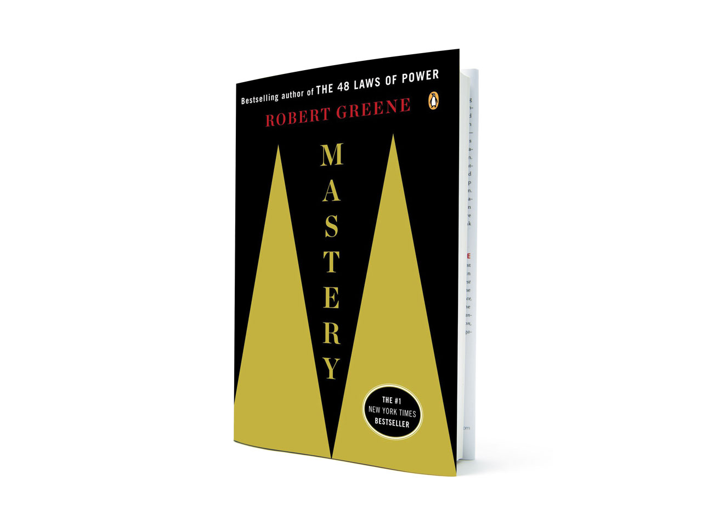
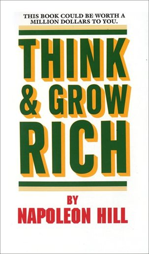

Animal Farm is an allegorical novella by George Orwell, first published in England on 17 August 1945.
The book reflects events leading up to the Russian Revolution of 1917 and
then on into the Stalinist era of the Soviet Union.

Mastery is the fifth book by the American author Robert Greene.
The book examines the lives of great historical figures—such as Charles Darwin, Mozart, and Henry Ford—
and contemporary leaders—such as Paul Graham and Freddie Roach.
It distills the traits and universal ingredients that made them masters.
Mastery explains how to become a leader in any given field by examining
the lives and pathways to success of historical masters such as Mozart, Einstein and Darwin.

Think and Grow Rich was written in 1937 by Napoleon Hill.It is a personal development and self-improvement book.
While the book's title and much of the text concerns increasing income, the author insists that his philosophy
can help people succeed in any line of work, to do and be anything they can imagine.